Electricity is one of the most important forms of energy in everyday life. The devices around us — phones, computers, heating systems — all rely on electrical circuits to work. In this section you will learn how circuits work and what the key quantities are.
An electric circuit is a closed loop made up of components such as batteries, lamps, switches and wires. Current can only flow if the circuit is complete.
The three key quantities
Current
Electric current is the flow of negatively charged particles called electrons. In Engineering Science, we use a standard called conventional current flow. This means we always treat current as flowing out from the positive (+) terminal of the power supply, through the circuit, and back into the negative (or 0V/ground) terminal.
Current is measured in Amperes (A). A milliamp (mA) is one thousandth of an amp: 1 mA = 0.001 A.
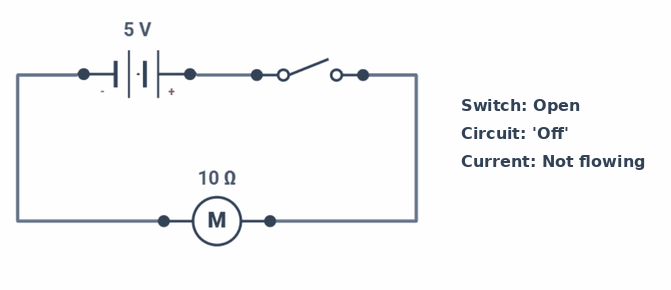
Conventional current flow: out of the positive (+) terminal, around the circuit, and back into the negative (−) / 0V terminal.
The symbol used for current in calculations and on circuit diagrams is I (capital i). For example, I = 2 A.
Voltage
Voltage is the electrical force that pushes current around a circuit. It comes from a battery or power supply. The bigger the voltage, the harder it pushes the electrons. Voltage is sometimes referred to as potential difference or emf.
Voltage is measured in Volts (V). A millivolt (mV) is one thousandth of a volt: 1 mV = 0.001 V.
Resistance
All components in a circuit resist the flow of current to some degree. A resistor is a component specifically designed to reduce current flow. The greater the resistance, the less current will flow for a given voltage.
Resistance can be physically measured using an ohmmeter or a multimeter set to the resistance (Ω) function.
Resistance is measured in Ohms (Ω). Larger values are written as kΩ (kilohms, ×1000) or MΩ (megohms, ×1 000 000).
Measuring voltage and current in a circuit
Voltage and current are measured with different instruments, connected in different ways.
A voltmeter measures the voltage across a component — one probe on each side — and has very high resistance so it takes almost no current from the circuit. On a circuit diagram, a voltmeter is shown with the symbol V inside a circle.
An ammeter measures the current through a component — the circuit must be broken and the ammeter inserted in line with it — and has very low resistance so it barely affects the circuit. On a circuit diagram, an ammeter is shown with the symbol A inside a circle.
The ammeter is wired in line with the circuit (it breaks the circuit to measure current). The voltmeter connects across the resistor without breaking the circuit.
A demo circuit has been loaded below. Click on the switch in the circuit to allow current to flow — you should notice that the ammeter displays the value of the current flowing.
🔍 Investigation 1 — Voltage, resistance and current
⚡ Open the NoResistance simulator Create a copy of the demo circuit and then change the battery voltage and resistance value using the Properties panel and record the ammeter readings in the tables below.
1. Keep the resistance at 2 kΩ. Change the battery voltage to each value below and record the current.
Voltage (V)
Resistance
Current (mA)
3
2 kΩ
5
2 kΩ
9
2 kΩ
2. Describe what happens to the current as the voltage increases.
Answer
3. Now keep the voltage at 5 V. Change the resistance to each value below and record the current.
Voltage
Resistance (Ω)
Current (mA)
5 V
500
5 V
1 000
5 V
2 000
5 V
5 000
4. Describe what happens to the current as the resistance increases.
Answer
5. Using your results, write a rule that describes the relationship between voltage, resistance and current.
Answer
Section 2: Components and Circuit Symbols 1
In Engineering Science you need to recognise and draw standard circuit symbols. These are the same symbols used by engineers worldwide — which matters because engineers, electricians and manufacturers in different countries often do not share a spoken language. A standard symbol carries its meaning without translation, so a circuit diagram drawn in Scotland can be read and built correctly by someone in Germany, Japan or anywhere else.
It helps to think of components in terms of the Systems Approach — the same framework used in the Systems and Control unit:
Category
Role in the circuit
Examples
Input
Provide power or detect a condition and send a signal into the circuit
Battery, switches, light sensor, temperature sensor
Process
Respond to the input signal and control the output
Transistor, resistor, diode
Output
Do something useful — produce light, sound, or movement
Lamp, LED, motor, buzzer, relay
Input components — power supplies
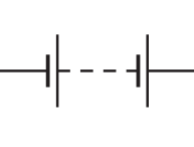
Battery
Input — power supply
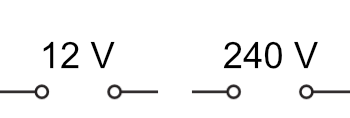
Voltage Rails
5V (top), 0V (bottom)
Power Supply Units
(12 V, 240 V)
Input components — switches
Switches control whether current can flow in a circuit. In the systems approach they are input devices — a person (or mechanism) operates them to send a signal to the rest of the circuit.
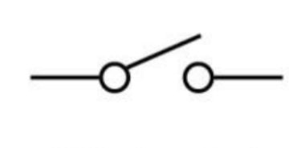
SPST Switch
Single Pole Single Throw
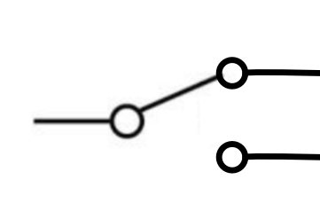
SPDT Switch
Single Pole Double Throw
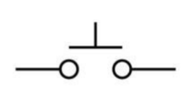
Push switch
Push-to-make
Output devices
Output devices convert electrical energy into something useful. They sit at the end of the system and respond to signals from the process stage.
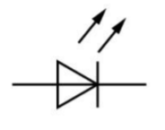
LED
Output — light
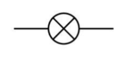
Lamp
Output — light
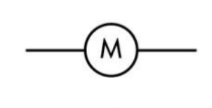
Motor
Output — motion
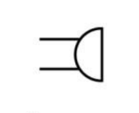
Buzzer
Output — sound
🔍 Investigation 2 — Switch circuits
⚡ Open the NoResistance simulator Build, using the symbols listed above, circuits to do the following jobs. For each, paste your completed circuit design into the answer space below.
1. A lamp must light when two switches are both closed. Are the switches connected in series or parallel?
Answer
2. A buzzer must sound when either of two switches is pressed. Are the switches connected in series or parallel?
Answer
3. When a switch is in one position, a lamp switches off and a motor spins. When the switch is in the other position, the lamp lights and the motor stops. Describe your circuit design. What type of switch do you need?
Answer
4. A lamp lights all the time. When a switch is pressed, a buzzer sounds. Build this circuit using a push-to-make switch.
Answer
5. A lamp must be able to be switched on and off from two different locations — for example upstairs and downstairs. Each switch must work independently. Build this circuit. (Hint: this is how staircase lighting works.)
Answer
⭐ Extension task
6. Build two separate circuits, each with four lamps — one wired in series, one in parallel — each controlled by a single switch. Which layout is more reliable if one lamp fails? Explain why.
Answer
✏️ Task 1 — Components and symbols
For any question below that asks you to draw or sketch, either describe the symbol clearly in words in the answer box, or draw it on paper / in your jotter and show your teacher.
1. Draw the circuit symbol for a) a lamp, b) a motor, c) a buzzer.
Answer
2. A circuit has a battery, a switch and a lamp connected in series. Describe what happens when the switch is closed, using the terms input, process and output in your answer.
Answer
3. Why do we use circuit symbols rather than pictures of components? Think about engineers, technicians and manufacturers from different countries working together on the same design.
Answer
Section 3: Ohm's Law
From your investigation you will have found that doubling the voltage doubles the current through a resistor. This relationship is known as Ohm's Law:
V = I × R
Voltage (V) = Current (A) × Resistance (Ω)
You can rearrange this formula to find any of the three quantities. The VIR triangle is a useful memory aid:
Cover the quantity you want to find — the other two show how to calculate it.
So:
V = I × R
I = VR
R = VI
Using Ohm's Law — worked examples
Worked example 1 — Find the current
A 6 V battery is connected to a 300 Ω resistor. Calculate the current.
1
Write the formula: I = VR
2
Substitute values: I = 6300
3
Calculate: I = 0.02 A = 20 mA
Worked example 2 — Find the resistance
A lamp has 9 V across it and 45 mA flowing through it. Calculate the resistance.
1
Convert mA to A: 45 mA = 0.045 A
2
Write the formula: R = VI
3
Substitute and calculate: R = 90.045 = 200 Ω
✏️ Task 2 — Ohm's Law calculations
Generic circuit for questions 1a–1d: a supply voltage V across a single resistor R.
1a) A 1 kΩ resistor has 9 V across it. Calculate the current in mA.
Answer
1b) Find the resistance of a component with 12 V across it and 60 mA through it.
Answer
1c) A 470 Ω resistor has 25 mA flowing through it. Calculate the voltage across it.
Answer
1d) A circuit has a 6 V battery and 30 mA of current. Calculate the total resistance.
A series circuit with three resistors (100 Ω, 220 Ω and 330 Ω — the same values as the worked example above), a voltmeter and an ammeter has been loaded below. Use the voltmeter to check the voltage across each resistor, and use the ammeter to confirm the circuit current matches your calculation. Try moving the ammeter to different positions to confirm the current is the same everywhere.
✏️ Task 3 — Series circuits
Question 1: two resistors in series across a 9 V supply.
1. Two resistors (150 Ω and 270 Ω) are connected in series across a 9 V supply. Calculate:
a) the total resistance
Answer
b) the circuit current
Answer
c) the voltage drop across each resistor
Answer
2. Three resistors (15 Ω, 24 Ω and 60 Ω) are connected in series across a 9 V supply. Calculate:
a) the total resistance
Answer
b) the circuit current
Answer
c) the voltage drop across the 60 Ω resistor
Answer
Question 3: the 25 Ω resistor has 4 V across it — find the supply voltage Vs.
3. Two resistors in series: 25 Ω and 75 Ω. The voltage across the 25 Ω resistor is 4 V. Find the circuit current and the supply voltage.
Answer
⚡ Build these circuits in the simulator and check your answers.
Section 5: Voltage Drops and Current Junctions
🔍 Investigation 3 — Measuring voltage and current
⚡ Open the NoResistance simulator Build the following circuit: a 9 V battery, a 1 kΩ resistor and a 470 Ω resistor in series. Add a voltmeter across each component and an ammeter in series.
Each voltmeter sits above the circuit, its legs running wide of the resistor and back down to the main circuit; the ammeter sits in line, halfway along the bottom wire.
1. Record the voltage across each component.
Component
Voltage (V)
Battery
9 V (given)
1 kΩ resistor
470 Ω resistor
Total (R1 + R2)
2. What do you notice about the total voltage across both resistors compared to the battery voltage?
Answer
3. Move the ammeter to different positions in the series circuit. What do you notice about the current at each point?
Answer
Voltage drops in a series circuit
An important rule governs voltage in series circuits:
Voltage rule: the sum of the voltage drops around any complete loop equals the supply voltage.
Vs = V1 + V2 — the voltage drops around the loop always add up to the supply voltage.
📖This rule is part of Kirchhoff's Laws (after the German physicist Gustav Kirchhoff). You do not need to remember his name for the exam — just the rule itself.
In a series circuit: the current is the same everywhere, and the voltages add up to the supply voltage.
✏️ Quick check — the voltage rule
A series circuit has a 12 V supply. The current is 20 mA. One resistor is 220 Ω. Using the voltage rule, find the value of the second resistor.
Answer
Section 6: Parallel Circuits
What is a parallel circuit?
In a parallel circuit there is more than one path for current to flow. In a circuit like the one below, each branch receives the full supply voltage — more generally, two components connected in parallel always share the same voltage, even inside a larger combined circuit that mixes series and parallel parts. A common example is the lighting in a classroom — each light has its own switch and works independently of the others.
Three resistors in parallel. The 9 V supply 'drops across' each resistor.
In a parallel circuit: each branch gets the full supply voltage, and the currents in each branch add together to give the total current. Two components connected in parallel always share the same voltage.
📖 This is Kirchhoff's Current Rule: the current flowing into a junction equals the current flowing out. Combined with the voltage rule from Section 5, these two laws govern every circuit you will ever analyse.
Resistors in parallel
When resistors are connected in parallel, the combined resistance is less than any individual resistor. This is because more paths are available for current to flow.
General formula (for any number of resistors):
1RT=1R1+1R2+1R3+ …
Special case: two resistors in parallel (the most common situation):
RT =R1 × R2R1 + R2
ProductSum — only works for two resistors
Worked example 1 — Two resistors in parallel (full solution)
R1 = 270 Ω, R2 = 100 Ω, supply voltage = 9 V. Find the combined resistance, circuit current, and current through each branch.
A parallel circuit with three lamps and individual switches has been loaded below. Click each switch to turn individual lamps on and off — notice that each lamp operates independently and that the full supply voltage appears across each branch.
✏️ Task 4 — Parallel circuits
1. A 10 Ω and 14 Ω resistor are connected in parallel across a 6 V supply. Calculate:
a) total resistance
Answer
b) circuit current
Answer
c) current through each resistor
Answer
2. A 660 Ω and 470 Ω resistor are in parallel. The supply voltage is 9 V. Calculate the total resistance, circuit current, and current through each branch. Verify that the branch currents add up to the total current.
Answer
3. A 440 Ω resistor is in parallel with a 330 Ω resistor. The current through the 440 Ω is 300 mA. Find the current through the 330 Ω.
Answer
4. A 6 Ω and 75 Ω resistor are in parallel across 12 V. Calculate the total circuit current.
Answer
⭐ Extension task
5. For the circuit below, calculate a) combined resistance, b) current from battery, c) current in each branch.
R1 = 100 Ω, R2 = 150 Ω, R3 = 300 Ω all in parallel across 12 V.
Answer
⚡ Build these circuits in the simulator and check your answers.
Section 7: Combined Series and Parallel Circuits
Real circuits often have a mix of series and parallel connections. To solve these you must simplify step by step:
R1 (blue) is in series with R2 and R3 (green), which are in parallel with each other — the same values used in the worked example below.
Find the combined resistance of the parallel section first (call it RP).
Add RP to any series resistors to find the total resistance RT.
Use Ohm's Law to find the circuit current.
Use the voltage and current rules to find individual voltages and currents.
Worked example — Series/parallel circuit
R1 = 100 Ω in series with a parallel combination of R2 = 300 Ω and R3 = 150 Ω. Supply = 9 V.
Total resistance: RT = R1 + RP = 100 + 100 = 200 Ω
3
Circuit current: IC = VRT = 9200 = 45 mA
4
Voltage across R1: VR1 = 0.045 × 100 = 4.5 V
5
Voltage across parallel section (voltage rule): VP = 9 − 4.5 = 4.5 V
6
Current through R2: I2 = 4.5300 = 15 mA
7
Current through R3: I3 = 4.5150 = 30 mA
8
Check: I2 + I3 = 15 + 30 = 45 mA — matches IC. ✓
✏️ Task 5 — Combined circuits
Question 1: the 1 kΩ resistor is in series with the parallel pair — the parallel pair shares one voltage between them, not the full 9 V.
1. A 1 kΩ resistor is in series with two parallel resistors (both 500 Ω) across a 9 V supply. Calculate:
a) combined resistance
Answer
b) circuit current
Answer
c) voltage across the 1 kΩ resistor
Answer
d) current through each 500 Ω resistor
Answer
2. A 1 kΩ resistor is in series with two parallel resistors (both 1 kΩ) across 12 V. Find the combined resistance, circuit current, voltage across the series resistor, and current through each parallel resistor.
Answer
⭐ Extension task
3. A 10 kΩ resistor is in series with a parallel combination of 500 Ω and 1 kΩ across 9 V. Find a) combined resistance, b) circuit current, c) voltage across the 10 kΩ, d) current through the 500 Ω.
Answer
Section 8: Voltage Dividers
A voltage divider is two (or more) resistors connected in series across a power supply, with an output connection taken from the midpoint between them. In a series circuit, each resistor gets a share of the supply voltage — the bigger the resistor, the bigger its share.
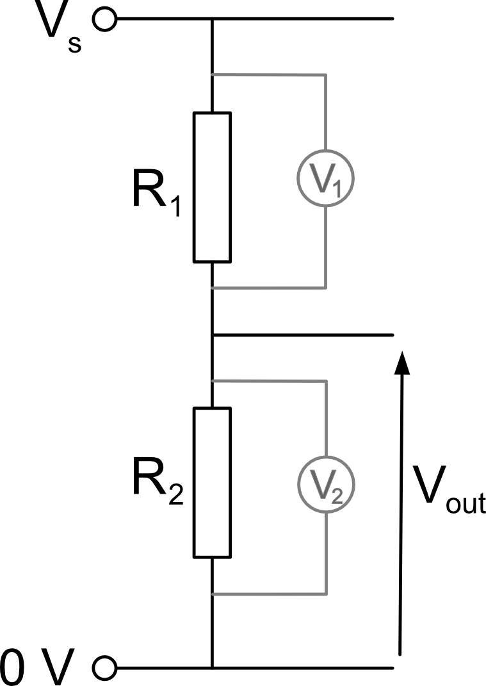
Label
What it means
Vs
Supply voltage — equal to V1 + V2
R1
Upper resistor (or component)
R2
Lower resistor (or component)
V1
Voltage from Vs to the output connection
V2 / Vout
Voltage from output to 0V — this is the useful output
RT
Total resistance = R1 + R2
0V
Ground / negative terminal of supply
Calculating Vout
There are two ways to find Vout (V2), depending on what you already know:
Method 1 — if you know V1
V1V2=R1R2
The ratio of voltages equals the ratio of resistances
Method 2 — if you know Vs
Vout =R2R1 + R2× Vs
You can also find V1 using Kirchhoff's Voltage Law: Vs = V1 + V2, so V1 = Vs − V2.
Sensor components and transducers
In Engineering Science there are three main components we use that change their resistance in response to their environment (changes in heat, light or position), making them ideal for use in voltage divider sensors.
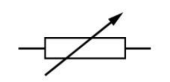
Variable Resistor
Change in position changes its resistance
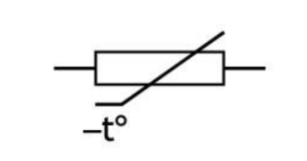
Thermistor
Change in temperature changes its resistance
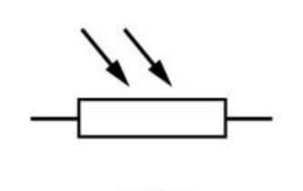
LDR
(Light Dependent Resistor) Change in light level changes its resistance
💡 Transducers convert energy from one form to another. Input transducers (light sensor using an LDR; heat sensor using a thermistor) convert physical conditions into electrical signals. Output transducers (lamp, motor, buzzer) convert electrical energy back into light, movement, or sound.
Typically, a thermistor or LDR is connected in series with a fixed resistor to form a voltage divider. The output is taken from across the fixed resistor (or the sensor, depending on whether you want the voltage to rise or fall as the condition changes).
Reading resistance values from graphs
When electronic engineers design circuits they need to know how much thermistors and LDRs will change when heat and light levels change. To help with this, manufacturers publish characteristic graphs showing how their resistances change with the conditions. The graphs work slightly differently from ones that you would normally come across.
LDR characteristic graph — ORP12
An LDR has high resistance in the dark and low resistance in bright light. The graph below shows how the resistance of an ORP12 LDR changes with illumination. Both axes are logarithmic.
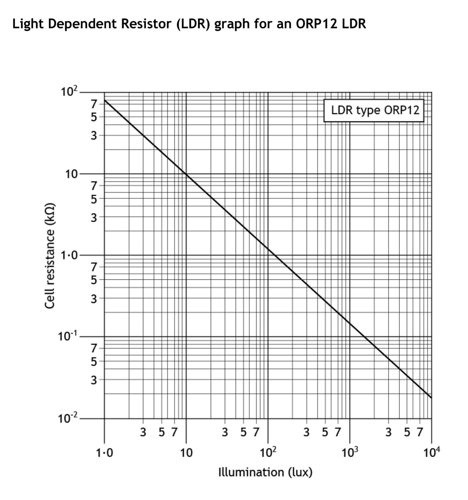
ORP12 LDR: resistance vs illumination (log–log scale)
LDR: resistance falls as light increases. The y-axis is in kΩ — remember to convert to Ω before calculating.
How to read the LDR graph
Find your illumination value (in lux) on the x-axis.
Draw a vertical line up from that point until it meets the dark line.
Draw a horizontal line left to the y-axis and read off the resistance in kΩ.
Convert to Ω if needed (multiply by 1 000).
Values read from the ORP12 graph at key light levels:
Light level
Illuminance (lux)
LDR resistance (from graph)
Very dim room
10
~10 kΩ (10 000 Ω)
Dim room
100
~1.2 kΩ (1 200 Ω)
Bright room
1 000
~170 Ω
Bright sunlight
10 000
~25 Ω
Thermistor characteristic graph
An NTC (Negative Temperature Coefficient) thermistor has high resistance when cold and low resistance when hot. The graph below shows six different thermistor types (curves 1–6). Use curve 3 for all questions in this section unless told otherwise.
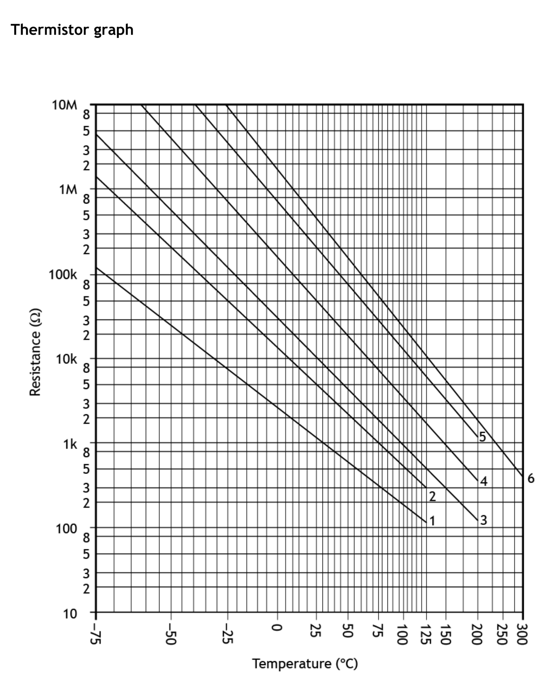
Thermistor resistance vs temperature. Use curve 3 for all exercises.
NTC Thermistor: resistance falls as temperature rises. Hot → low resistance. Cold → high resistance.
How to read the thermistor graph
Identify curve 3 on the graph (labelled at the right-hand end).
Find your temperature value on the x-axis.
Draw a vertical line up to curve 3, then a horizontal line left to the y-axis.
Read off the resistance. Note the y-axis uses k and M prefixes — convert to Ω.
An LDR voltage divider circuit has been loaded below. The LDR is in the lower position and the voltmeter measures Vout across it. Click on the LDR and use the slider to adjust the light level — watch how the voltmeter reading changes.
Using a graph value in a voltage divider calculation
The process is always the same: read the resistance from the graph, then substitute it into the voltage divider formula exactly like any fixed resistor.
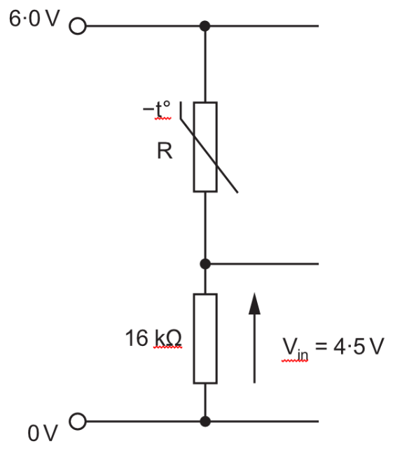
R1 (fixed) on top, LDR (R2) on the bottom — Vout is measured across the LDR.
Worked example 1 — LDR voltage divider (reading from graph)
A circuit has a 9 V supply, a fixed resistor R1 = 10 kΩ (top), and an ORP12 LDR as R2 (bottom). Vout is measured across the LDR. Find Vout when the illumination is 100 lux.
1
Read from the graph: at 100 lux, the ORP12 resistance ≈ 1.2 kΩ = 1 200 Ω
2
Total resistance: RT = 10 000 + 1 200 = 11 200 Ω
3
Voltage divider formula: Vout = Vs × RLDRRT
4
Vout = 9 × 1 20011 200 = 0.96 V
Worked example 2 — LDR in bright sunlight
Same circuit. Find Vout across the LDR in bright sunlight (10 000 lux).
1
Read from graph: at 10 000 lux, resistance ≈ 25 Ω
2
RT = 10 000 + 25 = 10 025 Ω
3
Vout = 9 × 2510 025 = 0.022 V — very small, because the LDR has very low resistance and takes only a tiny share of the voltage.
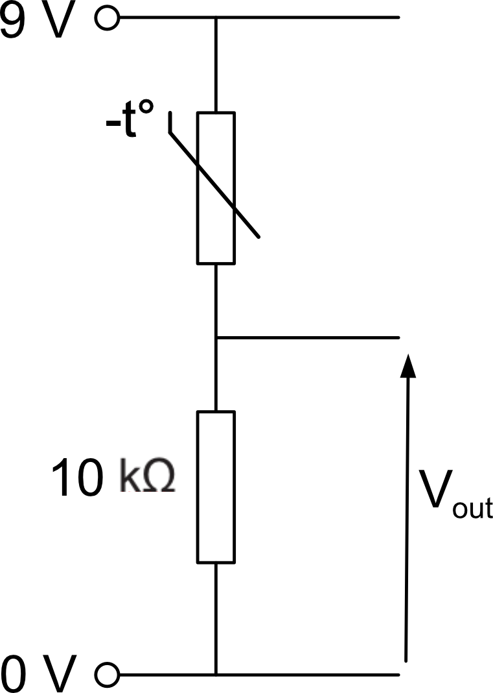
Thermistor (R1) on top, fixed R2 on the bottom — Vout is measured across R2.
Worked example 3 — Thermistor voltage divider (reading from graph)
A 9 V circuit has a thermistor (curve 3) as the upper resistor (R1) and a fixed resistor R2 = 10 kΩ as the lower. Vout is taken across the fixed resistor. Find Vout at 25°C and at 100°C.
Conclusion: as temperature rises, the thermistor resistance falls, so it takes a smaller share of the voltage — Vout across the fixed resistor rises.
✏️ Task 6a — Reading sensor graphs and calculating Vout
Use the ORP12 LDR graph and the thermistor graph (curve 3) above to answer these questions. For each calculation, show clearly: the resistance you read from the graph, RT, and Vout.
1. Use the LDR graph to read the resistance of the ORP12 at the illumination levels below, and record them in the table.
Illumination (lux)
LDR resistance (read from graph)
10
100
1 000
10 000
2. An ORP12 LDR is the lower resistor (R2) in a voltage divider with a 10 kΩ fixed resistor (R1) and a 9 V supply. Vout is measured across the LDR. Using your graph readings from Q1, calculate Vout at each light level.
Illumination
LDR resistance (from graph)
RT
Vout across LDR
10 lux
1 000 lux
3. Describe what happens to Vout across the LDR as the light gets brighter. Explain why, using the graph and your knowledge of voltage dividers.
Answer
4. Use the thermistor graph (curve 3) to read the resistance at each temperature below.
Temperature (°C)
Thermistor resistance (read from curve 3)
0
25
75
100
5. The thermistor (curve 3) is the upper resistor in a voltage divider with a 10 kΩ fixed resistor (lower) and a 9 V supply. Vout is measured across the fixed resistor. Using your readings from Q4, calculate Vout at 0°C and at 100°C.
Answer
⭐ Extension task
6. A designer needs Vout = 6 V from a 9 V supply when the ORP12 LDR is illuminated at 1 000 lux. Vout is taken across the fixed resistor (lower position). Use the graph to find the LDR resistance at 1 000 lux, then calculate the value of fixed resistor needed. Show all working.
Answer
What does the output voltage tell us?
In this configuration, the LDR is the lower resistor and Vout is measured across it. As the light level increases, the LDR resistance falls. Because it now takes a smaller share of the total resistance, it also takes a smaller share of the supply voltage — so Vout falls as it gets brighter.
Conversely, as it gets darker, the LDR resistance rises, it claims a larger share of the voltage, and Vout rises. This circuit therefore produces a high output voltage in darkness — which is why it is often called a dark sensor.
LDR in the lower position: Vout is high in the dark, low in the light — a dark sensor. LDR in the upper position: Vout is high in the light, low in the dark — a light sensor.
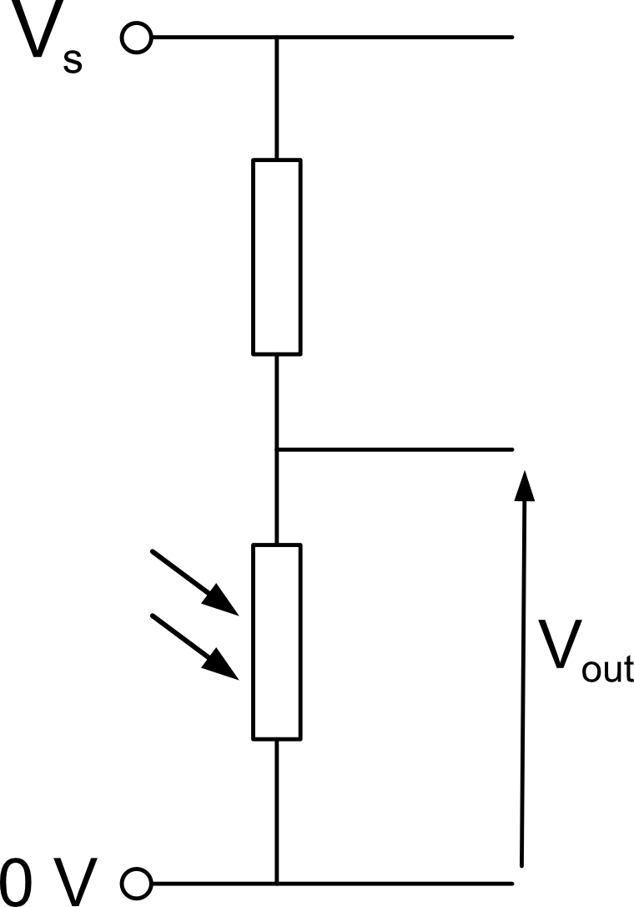
LDR lower — Vout high in the dark (dark sensor)
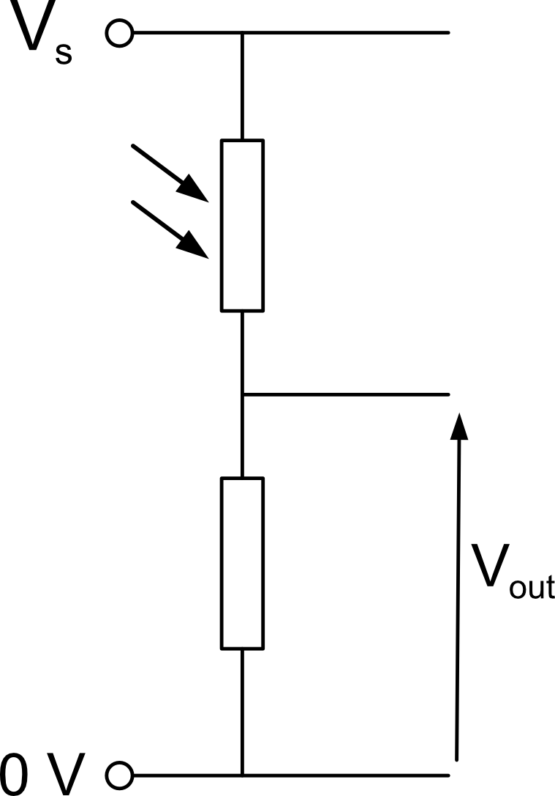
LDR upper — Vout high in the light (light sensor)
✏️ Task 6b — Light sensor vs dark sensor
1. Using the simulator above, record Vout at three different light levels and describe the trend.
Light level
Vout (V)
Dark
Medium
Bright
2. Now rebuild the circuit in the simulator with the LDR and fixed resistor swapped (LDR on top, fixed resistor below, voltmeter across the fixed resistor). Record Vout at the same three light levels.
Light level
Vout (V) — LDR on top
Dark
Medium
Bright
3. In the second circuit (LDR on top), Vout is high when it is bright and low when it is dark. This configuration is often called a light sensor. Explain why the first circuit (LDR on the bottom) is commonly known as a dark sensor.
Answer
4. A designer wants to switch on a street lamp automatically when it gets dark. Should they use a light sensor or a dark sensor configuration for the voltage divider? Explain your reasoning.
Answer
🔍 Investigation 4 — How does Vout change in a sensor voltage divider?
In this investigation you will explore how the output voltage of a sensor voltage divider depends on (a) the sensor's resistance, and (b) which way round the components are placed. Use the simulator above. Vout is always measured between the midpoint of the divider and 0 V (ground) — the voltage at the mid-rail.
Part A — Effect of resistance on Vout
Set up: LDR in the upper position, 10 kΩ fixed resistor in the lower position. Vout is measured across the fixed resistor (lower component).
1. Adjust the LDR light level from dark to bright. Record Vout at each condition.
Light condition
LDR resistance (approx.)
Vout (across lower resistor)
Very dark
Dim
Bright
2. As it gets darker, the LDR resistance increases. What happens to Vout across the lower (fixed) resistor? Explain using the idea of voltage sharing.
Answer
Part B — Effect of swapping the components
Now swap: put the fixed resistor in the upper position and the LDR in the lower position. Vout is now measured across the LDR.
3. Repeat at the same three light conditions.
Light condition
LDR resistance (approx.)
Vout (across lower LDR)
Very dark
Dim
Bright
4. Compare your results from Parts A and B. What is the key difference in how Vout responds to changing light levels? Which arrangement gives a higher Vout in darkness?
Answer
5. A designer wants Vout to be high when the temperature is high. Should the thermistor be in the upper or lower position? Explain your reasoning.
Answer
Key conclusion: a sensor voltage divider produces a voltage that varies with conditions — but a varying voltage on its own cannot switch a motor or lamp on and off. We need a component that can use a small voltage from the sensor circuit to control a much larger current in a separate output circuit. That component is the transistor.
✏️ Task 6c — Voltage divider calculations
1. A voltage divider has R1 = 200 Ω and R2 = 600 Ω with a 12 V supply. Calculate the voltage across each resistor.
Answer
2. A voltage divider has R1 = 1.2 kΩ and R2 = 2.4 kΩ with a 9 V supply. Calculate the voltage across the 1.2 kΩ resistor.
Answer
3. A voltage divider produces 4 V across R2 from a 12 V supply. If R2 = 300 Ω, calculate R1.
Answer
4. A thermistor is used in a voltage divider with a 10 kΩ fixed resistor and 9 V supply. At 80°C the thermistor resistance is 500 Ω. At 20°C it is 10 kΩ.
a) Calculate Vout across the fixed resistor at 80°C.
Answer
b) Calculate Vout across the fixed resistor at 20°C.
Answer
c) What happens to the voltage across the thermistor as temperature increases? Explain why.
Answer
⭐ Extension task
5. A voltage divider is required to give Vout = 4.5 V from a 9 V supply when a thermistor has a resistance of 2 kΩ at 100°C. Calculate a suitable value for the fixed resistor. State whether Vout will increase or decrease as temperature drops, and explain your answer.
Answer
Section 9: Transistors
Why do we need a transistor?
You have seen that a sensor voltage divider produces a voltage that varies with conditions — rising in darkness, falling in light, or rising with heat. But that varying voltage on its own cannot switch a motor, a buzzer, or a lamp. Those output devices need a much larger current than the tiny sensor circuit can ever supply.
What we need is a component that can use a small voltage (and tiny current) from the sensor circuit to control a much larger current in a completely separate output circuit. That component is the transistor.
💡 The tap analogy: imagine a water tap. A tiny turn of the handle (a small base current) allows a large flow of water through the pipe (a large collector current). The transistor works the same way — a small signal at the base controls a much larger current between collector and emitter. The transistor is the key component here, not a relay — it is a solid-state (no moving parts) electronic switch built into a tiny package.
What is a transistor?
The type used in N5 Engineering Science is the NPN Bipolar Junction Transistor (BJT). It is a solid-state semiconductor device — it has no moving parts and can switch on and off millions of times per second. It has three legs:
NPN Transistor
B=Base, C=Collector, E=Emitter
Base (B) — the control input. Connected to the output of the sensor voltage divider. When VB rises above ~0.7 V, the transistor switches on.
Collector (C) — connected to the positive supply through the output device (lamp, motor, relay coil, etc.).
Emitter (E) — connected to 0 V (ground). Current exits here.
How the transistor switches
Base voltage (VB)
Transistor state
Collector–emitter path
Output device
Below ~0.7 V
OFF
Open circuit — no current flows
Off
Above ~0.7 V
ON
Closed — large current flows freely
On
⚠️ At N5, we treat the transistor as a simple on/off switch. In reality the transistor switches on gradually as base voltage increases — this amplification behaviour is beyond the scope of the course.
The complete transistor switching circuit
A transistor switching circuit has two separate loops:
Input (base) circuit: the sensor voltage divider. When conditions change, Vout from the divider rises above 0.7 V and turns the transistor on.
Output (collector) circuit: the output device sits between the positive supply and the collector. When the transistor switches on, current flows through the device.
The two circuits share only the common 0 V connection at the emitter. This separation means the output circuit can operate at a much higher current than the delicate sensor circuit — the transistor bridges the gap between them.
The simulator below shows a transistor switching circuit controlled by an LDR voltage divider. Adjust the light level and observe: (1) how the base voltage changes, (2) the exact point at which the transistor switches on, and (3) what happens to the output device.
The need for a protective diode
A diode allows current to flow in one direction only. The two terminals are the anode (A, +) and cathode (c, −). Current only flows when the anode is at a higher voltage than the cathode.
Diode
One-way current
If the output device is a relay coil, motor, solenoid, or buzzer, there is a hidden danger. These devices contain coils of wire. When the transistor switches the current off, the magnetic field inside the coil collapses very rapidly. This generates a large voltage spike in the reverse direction — sometimes hundreds of volts, lasting only a fraction of a millisecond.
This is called back e.m.f. (back electromotive force). It travels backwards through the collector pin and can permanently destroy the transistor.
Whenever a transistor drives a coil-based device (relay, motor, solenoid, buzzer), a protective diode must be wired in reverse across that device to absorb the back e.m.f. spike.
The diode works in two phases:
Transistor ON: current flows normally through the coil. The diode is reverse-biased — it blocks the current and plays no part.
Transistor OFF: the back e.m.f. tries to drive current backwards. The diode is now forward-biased. It conducts and provides a safe circular path around the coil, dissipating the energy harmlessly as a tiny amount of heat. The transistor never sees the spike.
Two identical circuits are shown side by side. The left circuit has a motor driven by a transistor with no protective diode. The right circuit has the same setup but with a diode across the motor. Adjust the LDR on each side to switch the transistor on and off — observe the voltmeter readings and compare what happens at the collector when the transistor switches off.
🔍 Investigation 5 — Transistor switching
Build a light-sensing transistor circuit in the simulator. Use a 9 V supply, an LDR in series with a 10 kΩ fixed resistor as the voltage divider (base circuit), and an LED in series with a 470 Ω resistor as the output (collector circuit).
1a. Adjust the LDR light level. Describe what happens to the LED in bright and dark conditions.
Answer
1b. Use a voltmeter to measure the voltage at the transistor base. At what voltage does the transistor switch on?
Answer
2. Replace the LDR with a thermistor. Describe what happens as temperature is varied. Does the LED switch on when it gets hotter or cooler? Which component position (upper or lower in the divider) gives this behaviour?
Answer
3. Replace the LED with a relay coil and add a protective diode across the coil. Explain in your own words why the diode is needed and what would happen to the transistor without it.
Answer
✏️ Task 8 — Transistor circuit design
Design transistor switching circuits for the functions below. Sketch each circuit and explain your component choices. You can build your design in the simulator and paste it into the answer space, describe it clearly in words, or sketch it on paper and show your teacher.
1. A motor switches on when it gets light.
Answer
2. A solenoid switches on when it gets cold. Include a protective diode in your design. Mark clearly where the diode goes and explain why it is needed.
Answer
Section 10: Relays
Why use a relay?
Many output devices — such as motors in industrial machinery or mains-powered heaters — require much higher voltages and currents than a low-power electronic circuit can safely supply. A relay is the link between the two: a small control current switches a magnetically operated contact that controls the high-power circuit.
How the relay works
When current flows through the relay coil, it becomes an electromagnet. This attracts a flexible metal strip called the armature, which moves and closes (or opens) the switch contacts. When the current stops, a spring pulls the armature back.
A relay uses a small current in the coil to switch a much larger current in a completely separate output circuit — with no electrical connection between the two.
Relay SPDT
Coil + switch
⚡ Try it — Relay circuit: low-voltage control of a mains heater
The circuit below shows a 5 V microcontroller-style circuit using a transistor and relay to switch a 230 V mains heater. Adjust the variable resistor to change the base voltage and observe how the transistor controls the relay, which in turn switches the mains heater on and off — with complete electrical isolation between the two circuits.
✏️ Task 9 — Relays
1. Explain in your own words why a relay is needed to connect the 5 V control circuit to the 230 V mains heater. Why can the transistor not do this job directly?
Answer
2. Looking at the circuit in the simulator, the transistor has no protective diode across the relay coil. Why does this make the transistor vulnerable? What would you add to protect it?
Answer
3. In the simulator, adjust the variable resistor so the heater switches on. Describe what you observe in both the control circuit and the mains circuit.
Answer
4. Give two reasons why it would be dangerous to connect the mains heater directly to the transistor output instead of using a relay.
Answer
⭐ Extension task
5. The relay in this circuit is an SPDT type (Single Pole Double Throw). It has a normally-open (NO) and a normally-closed (NC) contact. Describe how you could use the NC contact to make a circuit that switches the heater off when the transistor switches on. When might this be useful?
Answer
Section 11: Design Challenges
The challenges below are different from the tasks you've done so far. Each gives you a real-world context and a short written specification — much like a real engineering brief — rather than a single question with one right answer. You'll need to design a circuit that meets the spec, build or simulate it, test it, and evaluate how well it actually performs.
How to approach these: read the whole specification before you start. Work out which sections of the course notes are relevant (voltage dividers? series/parallel? a relay?), do your calculations first, then build and test in the simulator. Your evaluation should refer back to the numbered points in the specification — say clearly whether each one is met, and by how much.
Design Challenge 1 — Hogmanay street lighting, Edinburgh
A contractor is fitting temporary decorative lighting along a section of the Royal Mile for Hogmanay. The display uses a string of small lamps (modelled here as fixed resistors) run from a single supply.
i
Supply voltage: 12 V
ii
Six identical lamps, each with a resistance of 60 Ω
iii
Total circuit current must not exceed 1.5 A with all six lamps lit, to stay within the extension lead's rating
iv
If any single lamp fails (goes open-circuit), the rest of the string must stay lit
✏️ Design Challenge 1 — Hogmanay street lighting
a) Design. Considering requirement (iv), decide whether the six lamps should be connected in series or in parallel, and justify your choice. Calculate the total resistance and total current for your chosen arrangement with all six lamps present, and confirm it meets requirement (iii).
Answer
b) Build/simulate. Build your circuit in the NoResistance simulator using a 12 V supply and six 60 Ω resistors. Paste or describe your completed circuit.
Answer
c) Test. In the simulator, remove one lamp to represent it failing. Record what happens to the remaining lamps and to the total circuit current.
Answer
d) Evaluate. Does your design still meet the specification after one lamp fails? Suggest one realistic improvement that would make the display safer or more reliable.
A community allotment group wants to protect their crops from overheating by fitting a fan that switches on automatically once their polytunnel gets too warm.
i
Supply voltage: 9 V
ii
The fan (a motor) should switch on once the temperature inside the tunnel reaches approximately 30°C
iii
A thermistor is available with a resistance of 4 kΩ at 30°C
iv
Choose a fixed resistor from 1 kΩ, 2 kΩ, 3.3 kΩ or 4.7 kΩ. Treat the fan as switching on once Vout at the transistor base reaches at least half the supply voltage (4.5 V)
✏️ Design Challenge 2 — Polytunnel vent fan
a) Design. Decide whether the thermistor should be in the upper or lower position of the voltage divider so that Vout rises as it gets hotter, and explain your reasoning. Then calculate Vout at 30°C for each of the four candidate fixed resistors, and select the one that comes closest to switching the fan on right at the 30°C target (requirement iv). Show all your working.
Answer
b) Build/simulate. Build the complete circuit — voltage divider, transistor and motor — in the simulator using your chosen resistor.
Answer
c) Test. Adjust the simulated thermistor value from a low temperature up towards 30°C and note the resistance at which the fan actually switches on.
Answer
d) Evaluate. How close was the actual switching point to 30°C? Suggest a realistic improvement — for example, would a variable resistor in place of the fixed one make the design better suited to a real installation?
Answer
Design Challenge 3 — Cycle shed security light
A school wants an LED light above the bike shed door that switches on automatically once it gets dark enough to be a safety concern, without anyone needing to flick a switch.
i
Supply voltage: 6 V
ii
An LDR is available: its resistance is around 400 Ω in daylight, rising to about 8 kΩ once it is dark enough to be a safety concern
iii
Output: a red LED, voltage drop 2 V when lit, current must not exceed 20 mA
iv
Choose a fixed resistor for the light-sensing divider from 470 Ω, 1 kΩ or 2.2 kΩ. Treat the light as switching on once Vout at the transistor base reaches at least half the supply voltage (3 V), and it must stay below this in daylight
✏️ Design Challenge 3 — Cycle shed security light
a) Design — sensor divider. This needs to be a dark sensor. Decide the LDR's position in the divider, then calculate Vout in daylight and in the dark for all three candidate fixed resistors. Select the resistor that gives the most reliable margin between clearly off and clearly on, and justify your choice.
Answer
b) Design — LED resistor. Calculate the minimum series resistor needed to keep the LED current at or below 20 mA, then choose a suitable standard value.
Answer
c) Build/simulate and test. Build the complete circuit and vary the simulated light level from bright to dark. Note the light level at which the LED actually switches on.
Answer
d) Evaluate. Does the switching point match your design? Suggest a realistic improvement to the design.
A small fishing harbour wants a warning light on the pier that comes on automatically when deck conditions are cold enough to risk icing, alerting crews before they step out.
i
Control circuit supply: 9 V
ii
Output: a 12 V warning lamp, switched via a relay
iii
Thermistor: resistance ≈ 2 kΩ at 3°C (the icing-risk threshold), ≈ 500 Ω at 15°C (a mild day)
iv
Choose a fixed resistor from 1 kΩ, 2 kΩ or 3.3 kΩ. The warning light must be ON at 3°C and below, and clearly OFF at 15°C, using the same 4.5 V (half-supply) switching convention as the earlier challenges
v
Include a protective diode, and be ready to justify its placement
✏️ Design Challenge 4 — Harbour ice-warning light
a) Design — sensor divider. Decide the thermistor's position so that Vout is high when it's cold. Calculate Vout at both 3°C and 15°C for all three candidate fixed resistors, and select the one that best meets requirement (iv). Show your working, including any option(s) that fail the spec and why.
Answer
b) Design — output stage. Explain why a relay is needed here, referring to requirement (ii). Then explain where you would place a protective diode and why it is needed.
Answer
c) Build/simulate and test. Build the complete circuit — thermistor divider, transistor, relay, diode and lamp — and vary the simulated temperature between 3°C and 15°C. Record what you observe.
Answer
d) Evaluate. Does your design meet every part of the specification? Compare this challenge to Design Challenge 3: why did that circuit not need a relay, while this one does?
Answer
💾 Answers saved automatically in this browser on this device.